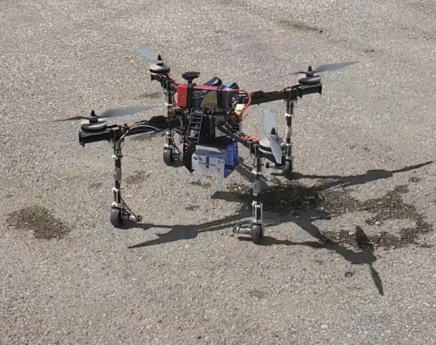
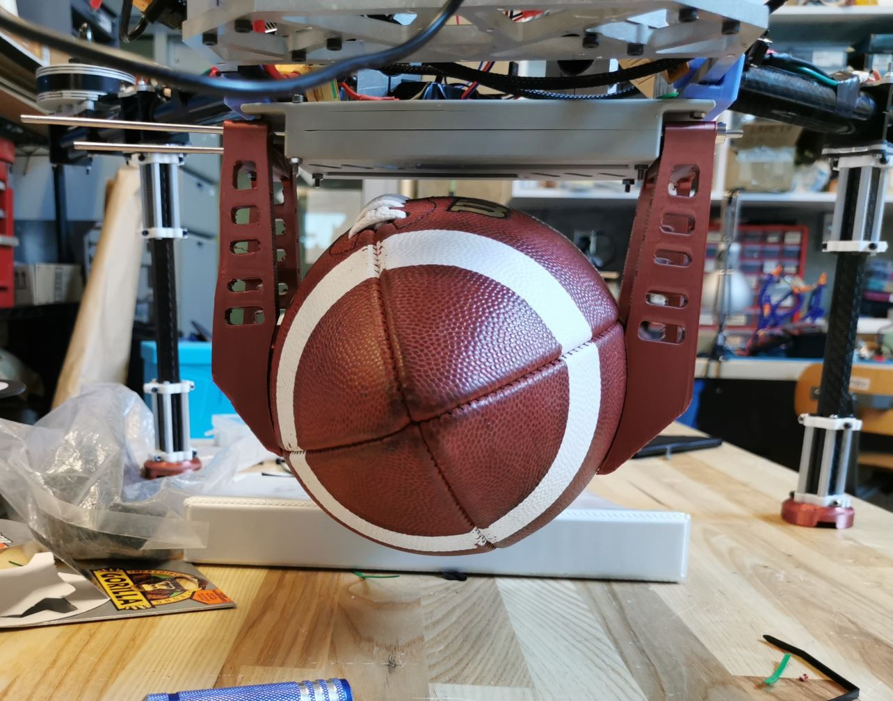
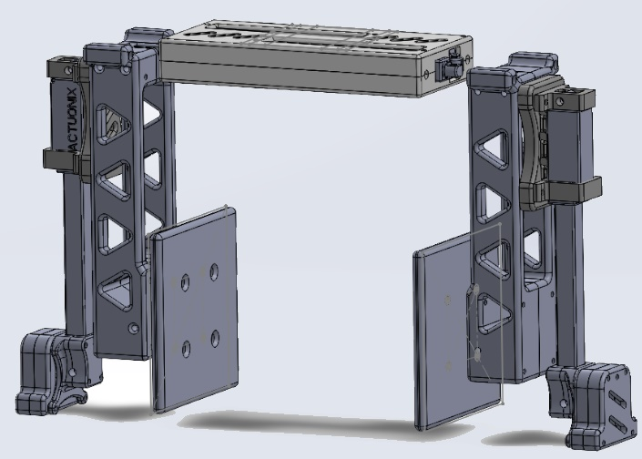
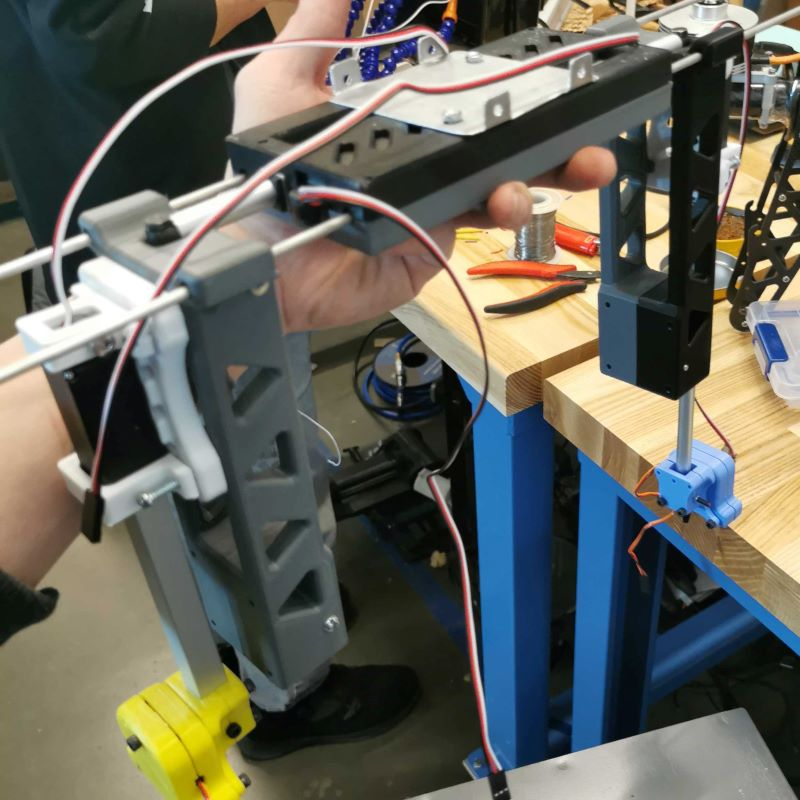
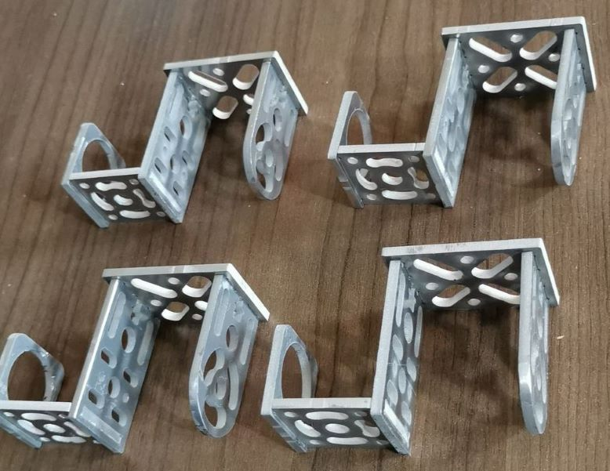
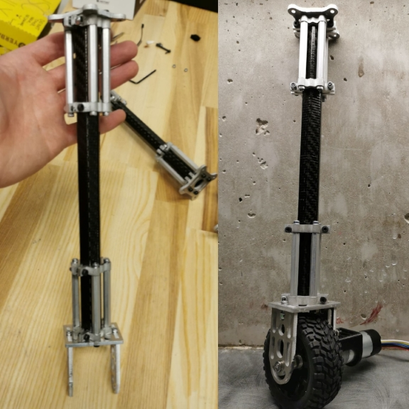
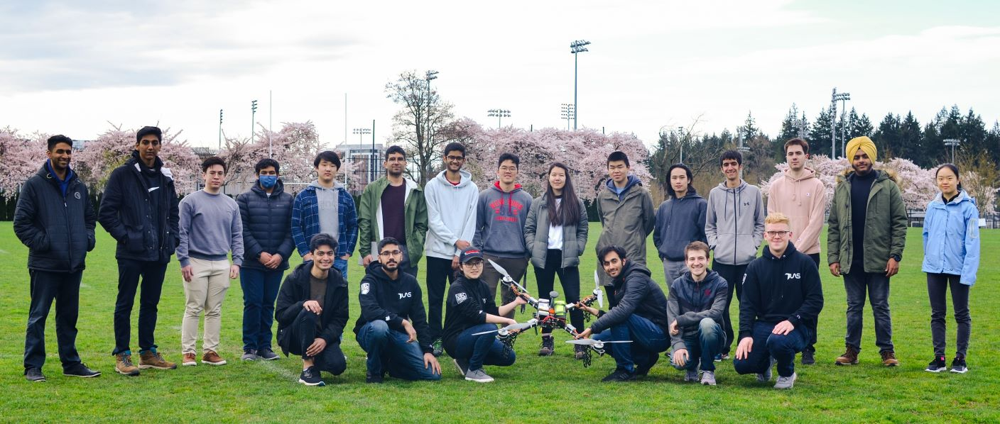
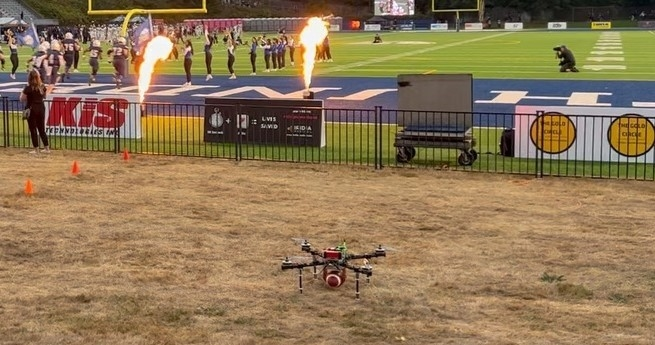

For the 2021-2022 Aerial Evolution Association of Canada (AEAC) national student conference, the goal of the competition was to locate a parcel of unknown dimensions, land, and safely retrieve the payload to be returned to home base. This was my first year with the UBC UAS team, where I worked as a mechanical designer and integration specialist for their drone — Ataksak.
- By myself, I worked on the design of a package retrieval mechanism making use of linear actuators to clamp and secure a package up to 20x20x20cm.
- I also worked with one other student on the manufacturing and assembly of landing gear implementing mecanum drive to improve maneuverability.
- Lastly, I worked on the manufacturing and reassembly of the drone after it unceremoniously crashed the night before leaving for competition :<.
- Linear actuators with aluminum jaws with 80N grip force, allowing packages up to 5kg
- Adjustable jaw tooling allows for adaptability to various package shapes and sizes
- Aluminum brackets secure carbon-tube struts, providing lightweight and stiff landing gear
- Mecanum wheels allow full drone maneuverability on the ground including pivoting and diagonals

Claw Modeling
The claw underwent a few design iterations making use of scissor jaws, buckets, and clamps. In the end, I settled on a wide jaw which would be retracted closed using 2x 100mm stroke linear actuators. The arms of the jaw were made with mounting holes, allowing the tooling to be swapped out with different shapes and sizes depending on the package being retrieved.

This was my first opportunity to work with a 3D printer for rapid prototyping, so I had the opportunity to learn about geometric tolerances, print orientation, and designing with fasteners in mind. Furthermore, my original CAD design was in Onshape, which convinced me to additionally learn SolidWorks as it was more commonly used on the team.

Fabricating Landing Gear
Due to the weight of needing 4 motors and mecanum wheels, the struts of the landing gear had to be made from hexagonal carbon-fibre tubing. To address the weakness in shear, the struts were supported by aluminum brackets waterjet cut from ⅛” sheet metal.

Here, I learned how to safely handle carbon-fibre materials, as well as setting up .dxf files and operating a waterjet cutter. In total, I manufactured over 80 aluminum parts, and made use of my prior metal-work knowledge to teach other new members how to safely operate in a shop environment and handle metal fabrication tools.

Drone Reassembly
Unfortunately Ataksak crashed during our final test flight, damaging the carbon-fibre hex tubes on the landing gear, and the tubes holding the prop motors. Overnight, I worked on the repair of the drone by cutting new carbon booms, disassembling and reassembling the drone chassis, and resoldering all the connections for power and battery lines.
While an unfortunate event, it gave me the experience of working efficiently and juggling multiple tasks in a significantly time-limited scenario.
Despite the last minute crash of Ataksak, we managed to successfully complete all test flight missions and compete at competition, though due to radio communication errors, we were unsuccessful at flight whilst on the airfield.
Regardless, this was a great opportunity to expand my knowledge of actuators and electro-mechanical systems, pick up the usage of SolidWorks, and apply more complex manufacturing methods such as the waterjet machine and laser cutter.

